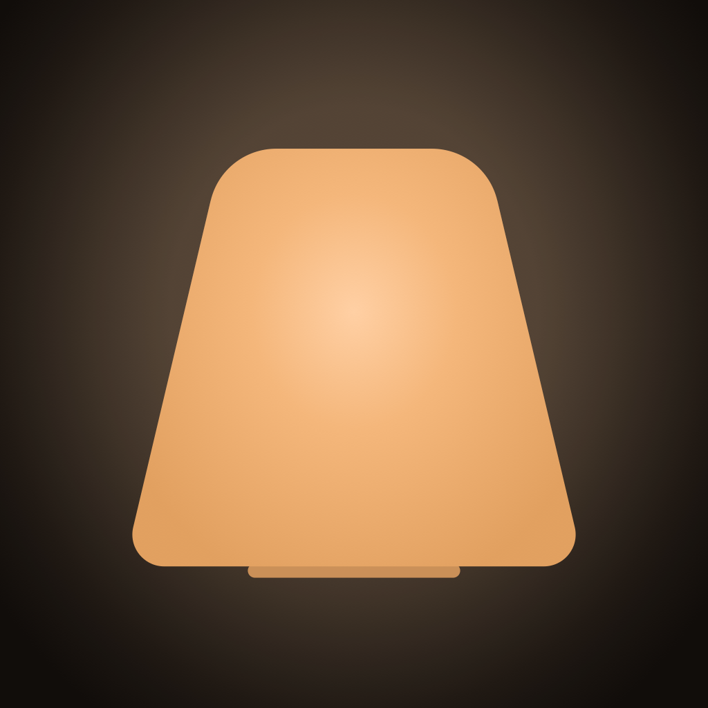
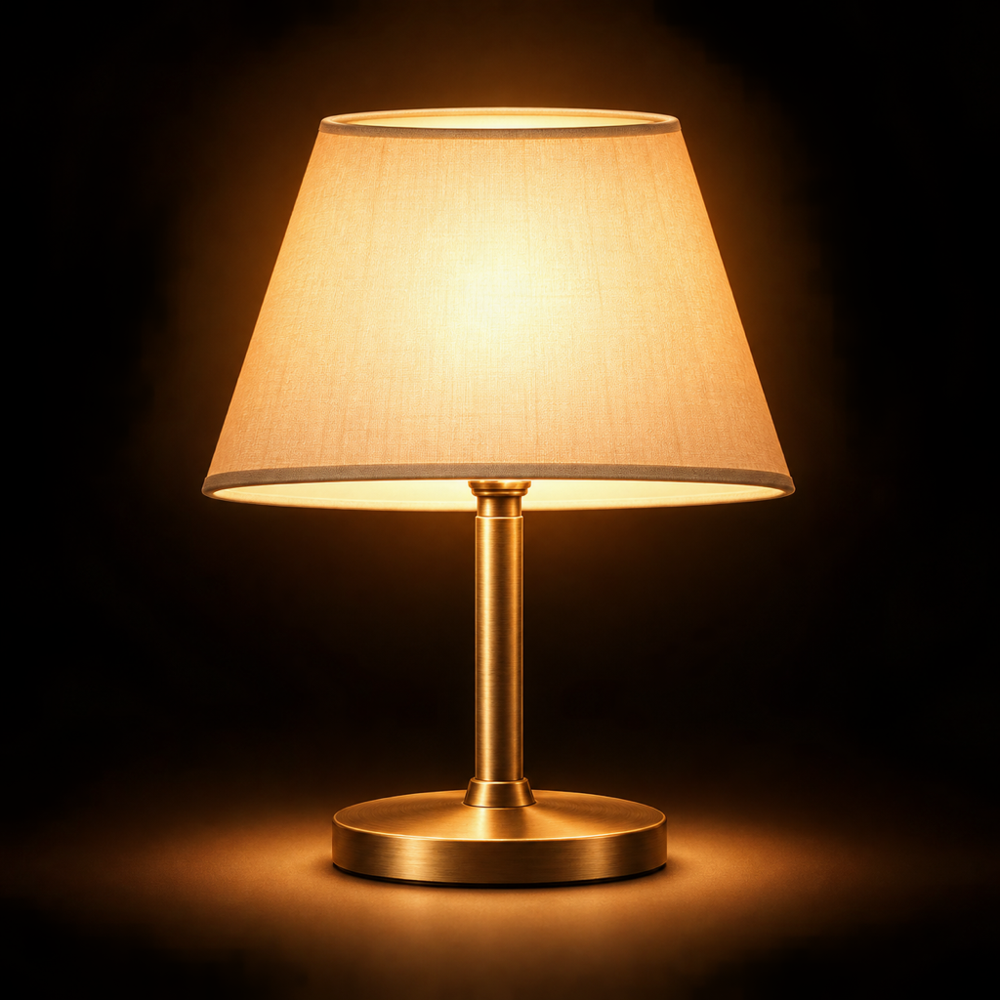
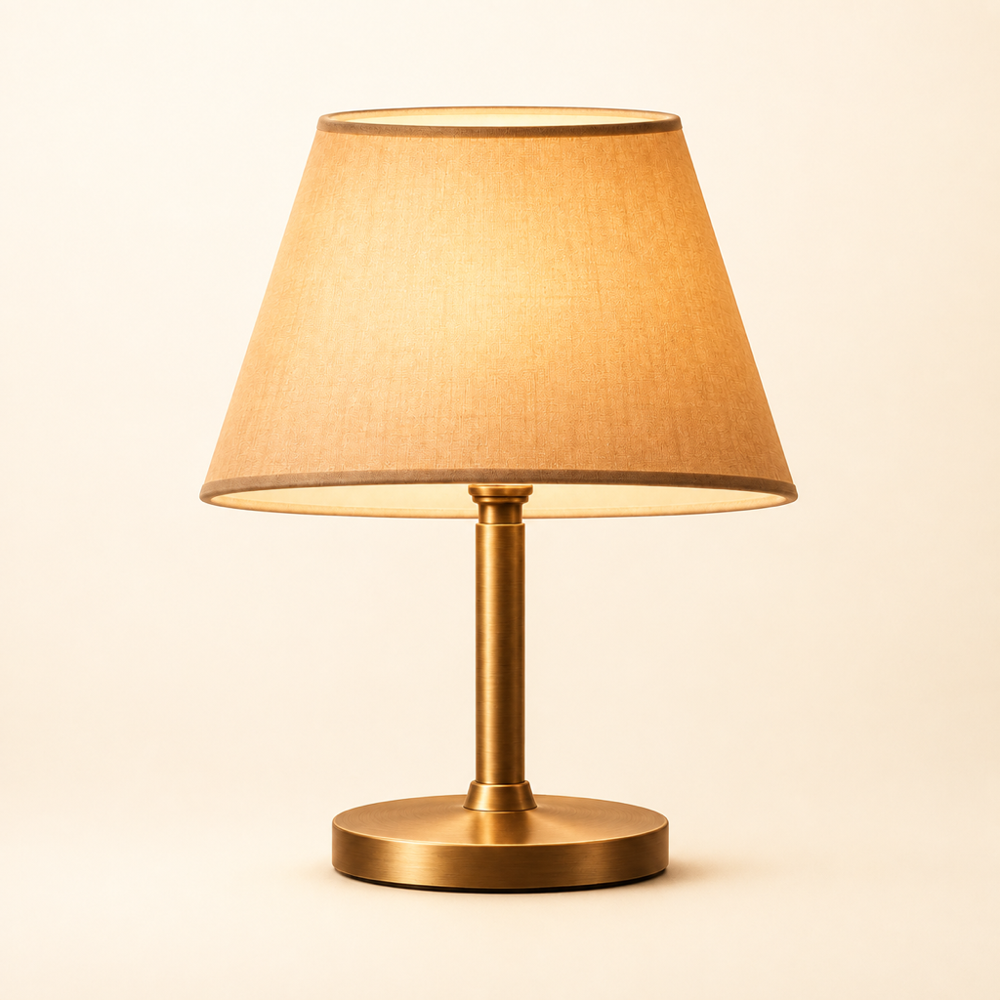
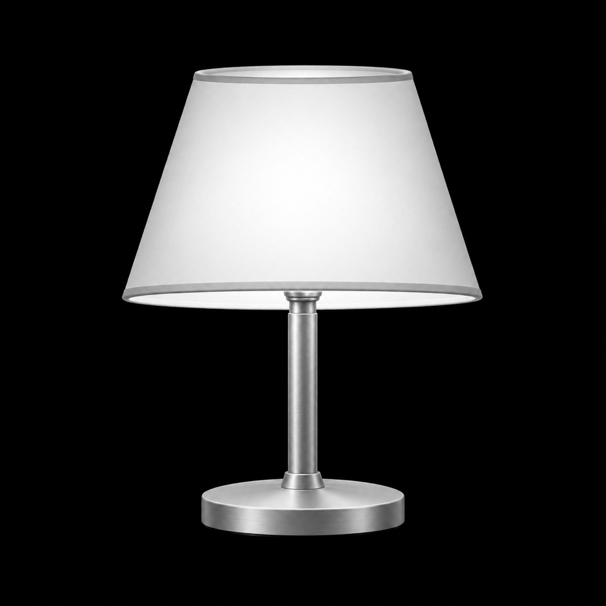

Hushlight · Icon review
Hushlight / Icon studyA light for the night.
A tapered linen shade, a separate brass stem, and a low round base. Warm light gives this classic table lamp depth while carrying the app’s quiet amber identity onto the home screen.

Previous · flat shade, minimal base

Current · classic table lamp
Dark / App Store

Light

Tinted master